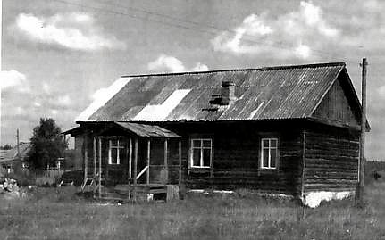

|
 Село Окатово на речке Гусь находится примерно в 45 км по автотрассе к северо-востоку от Гусь-Хрустального, в 10 км по лесной дороге от города Курлово. Первые сведения о нем относятся к XIV веку. В XVII веке это была вотчина родственника царя Михаила Федоровича боярина Никиты Романова.До 1863 года Окатово было деревней, приписанной к Заколпскому приходу. До села Заколпье от Окатово идти приходилось 17 верст, а потому в 1862 году крестьяне приняли решение построить у себя свой храм в честь Рождества Христова и Рождества Пресвятой Богородицы. Наряду с беднотой проживали в Окатово и зажиточные люди. Так, например, Филипп Осипов был известным лесопромышленником, крестьянин Гусаров имел свою лавку и пекарню. Жили они в добротных кирпичных домах, которые сохранились до сей поры. Их семьи и вложили основной вклад в создание самостоятельного прихода. В 1863 году деревянный храм был построен и в том же году освящен. При церкви имелось 3 десятины земли усадебной (около 3 га), 27 десятин пахатной и 3 десятины сенокосной. В приход вошли, кроме Окатово, деревни Степаново, Вековка и Курловская стеклянная фабрика, в коих по клировым ведомостям числилось в 1896 году 918 душ мужского пола и 965 женского. Летом 1921 года в храме произошел пожар. Из огня вынести удалось немногое, но часть икон и утвари разобрали по домам. После пожара службы стали продолжаться на дому у священника. В скором времени он заболел и уехал из села на лечение. В Окатово явился новый священник, который в первую же ночь из дома матушки украл серебряный крест и был таков. Искать его никто не собирался. С 1872 года в Окатово рядом с церковью работала земская народная школа, в которой обучалось более 50 учащихся. Когда в 20-х годах XX века было построено новое школьное здание, в бывшей земской школе устроили молитвенный дом, а потом селяне приступили к восстановлению сгоревшей церкви. Рядом со стройкой на 4-х бревенчатых столбах устроили звонницу, в которой был подвешен колокол весом в 61 пуд (около 1 тонны). Особенностью села был тот порядок, согласно которому сторож отбивал в этот колокол удары подобно часам с боем: один удар - час ночи, шесть ударов - шесть утра и т.д. Когда новый сруб с куполом и крестом был построен? свое слово сказала советская власть. В 1929 году в стране начался очередной этап богоборчества, Рождественская церковь в Окатово лишилась купола и была превращена в сельский клуб. Кирпич от забора был распродан сельсоветом на хозяйские нужды. Гранитные надгробия с погоста уничтожили, а на месте кладбища и поныне простирается пустырь. По праздникам окатовцы снова стали ходить в Заколпье и Цыкуль. А с началом войны в 1941 году был сброшен и отправлен на переплавку колокол со звонницы. Иконы с бывшей церкви и сейчас можно встретить в ряде окатовских домов, хотя, когда в 1991 в Курлово открылся храм во имя Серафима Саровского, многие жители отдали иконы туда. На церковном фундаменте ныне стоит здание клуба (см. фото клуба) А.ЧИСТЯКОВ, Н.КАПКОВА 9 августа 2005, навестив в г. Гусь-Хрустальный 80 летнюю маму, подготовил эту страницу. Вечером прочитал статью в Московском комсомольцеи всплыли в памяти пьющие пиво молодые люди на набережной озера Гусь, закрытые и обанкроченные промышленные предприятия города, сообщения о дерзких убийствах местных предпринимателей и она стала логическим продолжением материала о с.Окатово, по существу дополнительным свидетельством трагических последствий российского эксперимента в ХХ веке. |